Opera & musical theater
The real stories behind the shows, and how a 150-year-old opera ends up on MTV.
- The Phantom is real
- How Carmen went from opera to MTV
- Sweeney Todd
I make short videos that explain opera, ballet, theater and art history to people who think the arts aren’t for them. I connect what’s on stage to the films, songs and moments people already know.
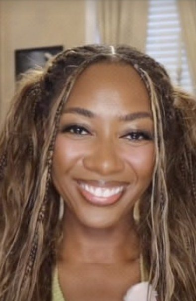
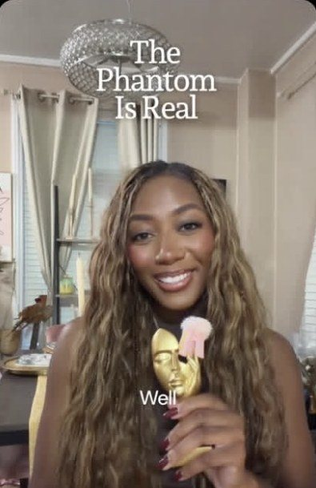
The Phantom is real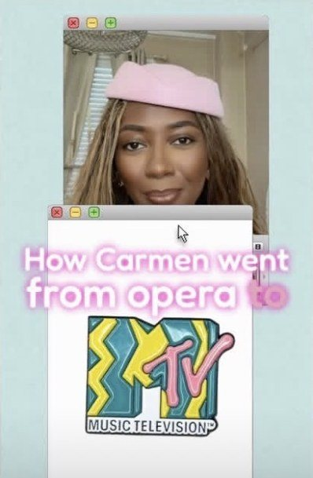
How Carmen went from opera to MTV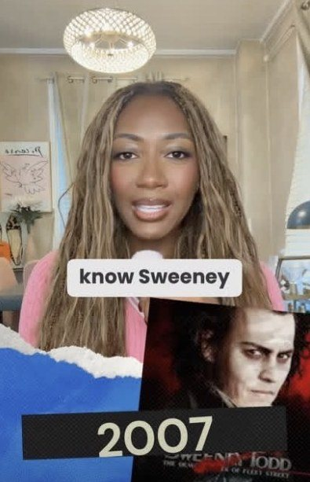
Sweeney Todd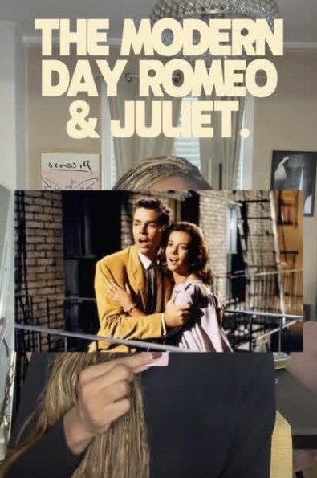
The modern-day Romeo & Juliet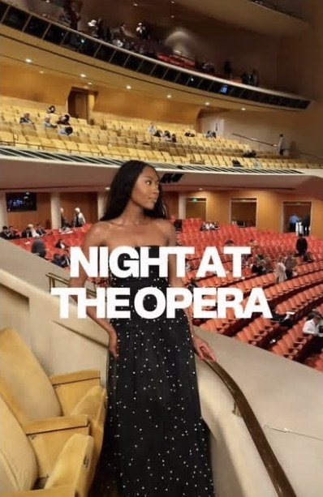
A night at the opera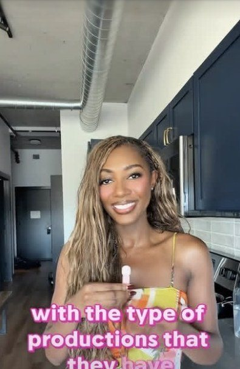
Productions worth seeing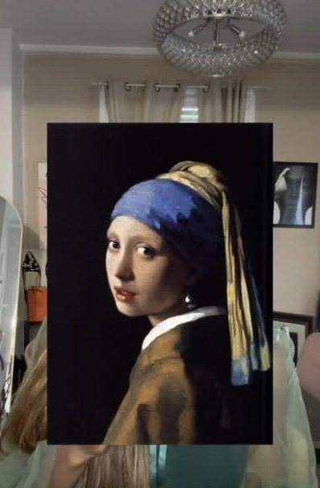
Girl with a Pearl Earring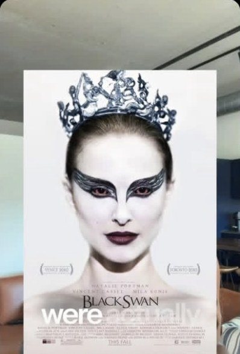
Black Swan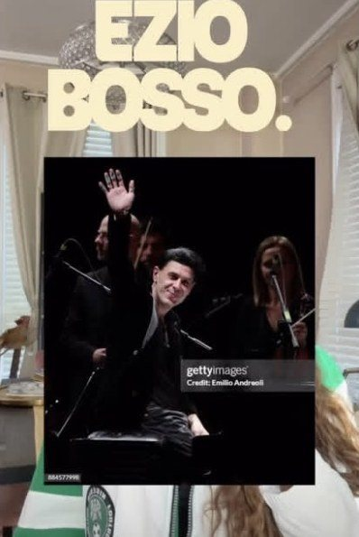
Ezio Bosso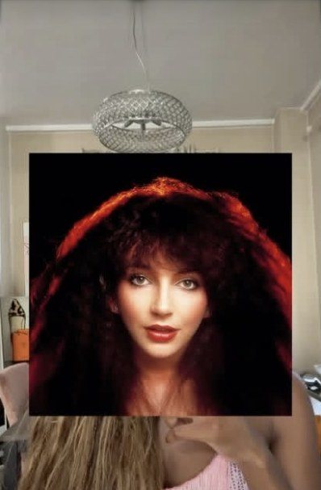
Kate Bush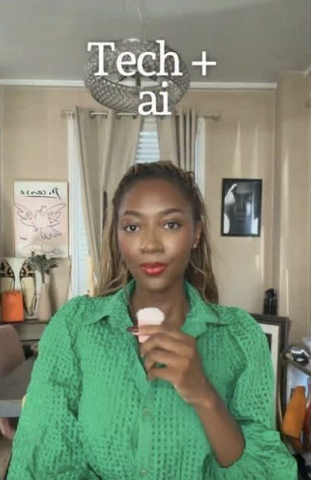
Tech + AI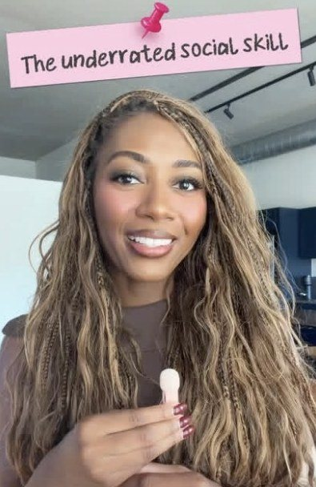
The underrated social skill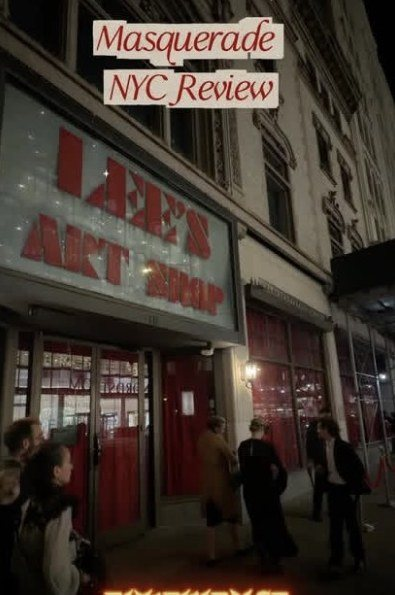
Masquerade, NYCI partner with arts organizations, fashion and beauty brands and tech companies that want to reach people who are curious about culture. I handle the idea, the script, filming and editing, and I can host on camera at your event.
Four kinds of videos, each with its own angle.
The real stories behind the shows, and how a 150-year-old opera ends up on MTV.
Paintings, poets, ballets and composers, and why they still matter.
Technology and AI without the jargon, plus advice from my own career.
What it is actually like to go, from immersive theater to opening nights.
I do every step myself, so a brand works with one person from start to finish.
A show, a painting or a moment people already know.
The history and the backstory, checked.
Short, clear and written to be said out loud.
Talking to camera, with the clips, art and posters that tell the story.